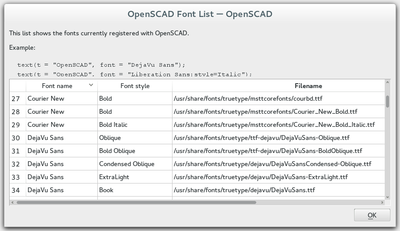
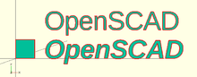

Fonts are specified by their logical font name; in addition a style parameter can be added to select a specific font style like "bold" or "italic", such as:
font="Liberation Sans:style=Bold Italic"
The font list dialog (available under Help > Font List) shows the font name and the font style for each available font. For reference, the dialog also displays the location of the font file. You can drag a font in the font list, into the editor window to use in the text() statement.

OpenSCAD font list dialog
OpenSCAD includes the fonts Liberation Mono, Liberation Sans, Liberation Sans Narrow and Liberation Serif. Hence, as fonts in general differ by platform type, use of these included fonts is likely to be portable across platforms.
For common/casual text usage, the specification of one of these fonts is recommended for this reason. Liberation Sans is the default font to encourage this.
In addition to the installed fonts, it's possible to add project specific font files. Supported font file formats are TrueType Fonts (*.ttf) and OpenType Fonts (*.otf). The files need to be registered with use<>.
use <ttf/paratype-serif/PTF55F.ttf>
After the registration, the font is listed in the font list dialog, so in case logical name of a font is unknown, it can be looked up as it was registered.
OpenSCAD uses fontconfig to find and manage fonts, so it's possible to list the system configured fonts on command line using the fontconfig tools in a format similar to the GUI dialog.
$ fc-list -f "%-60{{%{family[0]}%{:style[0]=}}}%{file}\n" | sort ... Liberation Mono:style=Bold Italic /usr/share/fonts/truetype/liberation2/LiberationMono-BoldItalic.ttf Liberation Mono:style=Bold /usr/share/fonts/truetype/liberation2/LiberationMono-Bold.ttf Liberation Mono:style=Italic /usr/share/fonts/truetype/liberation2/LiberationMono-Italic.ttf Liberation Mono:style=Regular /usr/share/fonts/truetype/liberation2/LiberationMono-Regular.ttf ...
Example
square(10); translate([15, 15]) { text("OpenSCAD", font = "Liberation Sans"); } translate([15, 0]) { text("OpenSCAD", font = "Liberation Sans:style=Bold Italic"); }

Example 2: Result.
Created with the Personal Edition of HelpNDoc: Free EPub producer